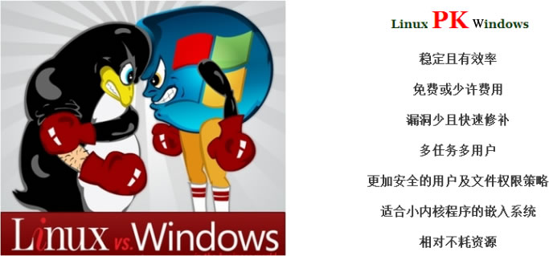
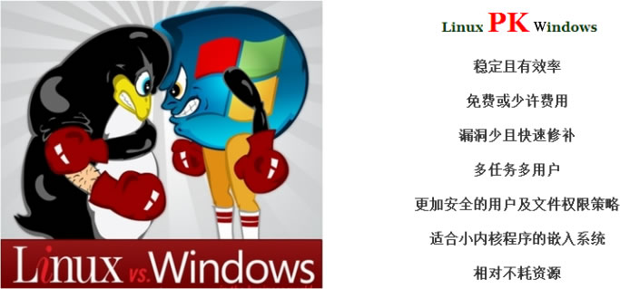

为什么要学Linux，它比Windows好在哪里？
早在 20 世纪 70 年代，UNIX 系统是开源而且免费的，但是在 1979 年时，AT&T 公司宣布了对 UNIX 系统的商业化计划，随之开源软件业转变成了版权式软件产业，源代码被当作商业机密，成为专利产品，人们再也不能自由地享受科技成果。
于是在 1984 年，Richard Stallman 面对于如此封闭的软件创作环境，发起了 GNU 源代码开放计划并制定了著名的 GPL 许可协议。
图 1 Richard Stallman
1994 年 1 月，Bob Young（红帽创始人）在 Linux 系统内核的基础之上，集成了众多的源代码和程序软件，发布了红帽系统并开始出售技术服务，这进一步推动了 Linux 系统的普及。
1998 年以后，随着 GNU 源代码开放计划和 Linux 系统的继续火热，以 IBM 和 Intel 为首的多家 IT 企业巨头开始大力推动开放源代码软件的发展。
到了 2017 年年底，Linux 内核已经发展到了 4.13 版本，并且 Linux 系统版本也有数百个之多，但它们依然都使用 Linus Torvalds 开发、维护的 Linux 系统内核。RedHat 公司也成为了开源行业及 Linux 系统的带头公司。
初步接触 Linux 的读者，或者有这样一个疑问，Windows 系统也很好用，也能满足日常工作需求，为什么要学习 Linux 系统呢？
有些初学者会将“Linxu 系统是开源的”作为这个问题的答案，其实不然。开源的操作系统少说有 100 个，开源的软件至少也有十万个，为什么不去逐个学习？Linux 的开源特性只是一部分优势，并不是学习 Linux 的主要原因。
对于用户来讲，开源精神仅具备锦上添花的效果，真正的原因在于，Linux 系统是一款优秀的软件产品，具有类似 UNIX 的程序界面，而且继承了 UNIX 的稳定性，能够较好地满足工作需求。
大多数读者应该都是从微软的 Windows 系统开始了解计算机和网络的，客观来讲，Windows 系统确实很优秀，但是在安全性、高可用性与高性能方面却难以让人满意。例如，如果你经常使用 Windows，应该见过如图 1 所示的这个界面。

图 1 Windows系统崩溃
想必读者现在已经能猜到，为什么要在需要长期稳定运行的网站服务器上、在处理大数据的集群系统中，以及需要协同工作的环境中采用 Linux 系统了。

图 2 Linux相比Windows的优势
从图 2 中，也可以看出 Linux 系统相较于 Windows 系统的具体优势。
于是在 1984 年，Richard Stallman 面对于如此封闭的软件创作环境，发起了 GNU 源代码开放计划并制定了著名的 GPL 许可协议。
图 1 Richard Stallman
1987 年时，GNU 计划获得了一项重大突破，即发布了 gcc 编译器，这使得程序员可以基于该编译器编写出属于自己的开源软件。随之，在 1991 年 10 月，芬兰赫尔辛基大学的在校生 Linus Torvalds 编写了一款名为 Linux 的操作系统，该系统因其较高的代码质量且基于 GNU GPL 许可协议的开放源代码特性，迅速得到了 GNU 计划和一大批黑客程序员的支持，随后 Linux 系统便进入了如火如荼的发展阶段。Richard Stallman，理查德·马修·斯托曼，自由软件运动的领袖、GNU 计划的创立者。
1994 年 1 月，Bob Young（红帽创始人）在 Linux 系统内核的基础之上，集成了众多的源代码和程序软件，发布了红帽系统并开始出售技术服务，这进一步推动了 Linux 系统的普及。
1998 年以后，随着 GNU 源代码开放计划和 Linux 系统的继续火热，以 IBM 和 Intel 为首的多家 IT 企业巨头开始大力推动开放源代码软件的发展。
到了 2017 年年底，Linux 内核已经发展到了 4.13 版本，并且 Linux 系统版本也有数百个之多，但它们依然都使用 Linus Torvalds 开发、维护的 Linux 系统内核。RedHat 公司也成为了开源行业及 Linux 系统的带头公司。
初步接触 Linux 的读者，或者有这样一个疑问，Windows 系统也很好用，也能满足日常工作需求，为什么要学习 Linux 系统呢？
有些初学者会将“Linxu 系统是开源的”作为这个问题的答案，其实不然。开源的操作系统少说有 100 个，开源的软件至少也有十万个，为什么不去逐个学习？Linux 的开源特性只是一部分优势，并不是学习 Linux 的主要原因。
对于用户来讲，开源精神仅具备锦上添花的效果，真正的原因在于，Linux 系统是一款优秀的软件产品，具有类似 UNIX 的程序界面，而且继承了 UNIX 的稳定性，能够较好地满足工作需求。
大多数读者应该都是从微软的 Windows 系统开始了解计算机和网络的，客观来讲，Windows 系统确实很优秀，但是在安全性、高可用性与高性能方面却难以让人满意。例如，如果你经常使用 Windows，应该见过如图 1 所示的这个界面。
图 1 Windows系统崩溃
想必读者现在已经能猜到，为什么要在需要长期稳定运行的网站服务器上、在处理大数据的集群系统中，以及需要协同工作的环境中采用 Linux 系统了。

图 2 Linux相比Windows的优势
从图 2 中，也可以看出 Linux 系统相较于 Windows 系统的具体优势。
关注微信公众号「站长严长生」，在手机上阅读所有教程，随时随地都能学习。本公众号由C语言中文网站长运营，每日更新，坚持原创，敢说真话，凡事有态度。

微信扫描二维码关注公众号